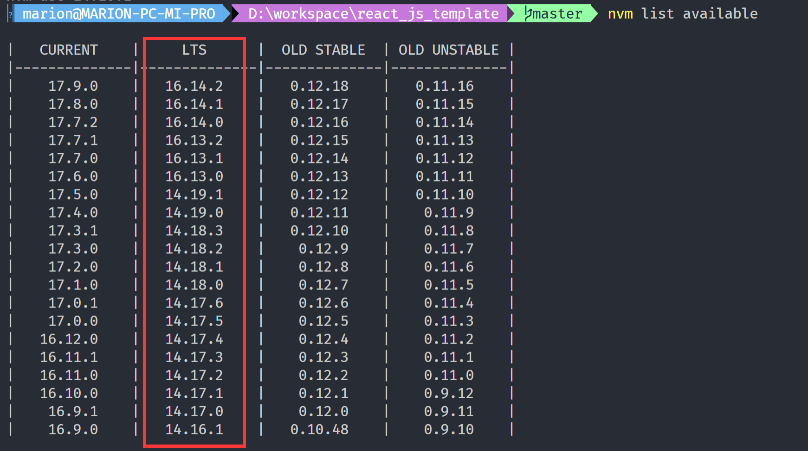

平安蜀黍的前端教程 > 第一单元 开发环境与工具封装 > 项目的基本运行环境
工欲善其事，必先利其器。一个好的开发环境可以让我们更容易进行代码的编辑与问题的查找。所以，在开始学习撸码之前，我们需要先配置好工作环境。本节课内容是为了更好的进行日常开发工作，属于常用但并不是必须了解，所以，请一定要在今天的课程之内将你所有的环境配置完成！
在开始一切操作之前，请伪装一下你的专业性，工作路径中的目录名应该都是由英文单词构成而且符合项目语义！然后，如果你是 windows 用户，将你的工作目录设定在 c 盘或 d 盘根路径下；如果你是 osx 用户，可以在桌面直接建立一个工作目录，并将其命名为 Example 或 Workspace。这样可以尽量避免我们在开发的过程中会遇上的一些因为中文路径而导致的奇怪且棘手的问题。不要花时间去学习解决这种没有普适性的问题，人的精力是有限的，没必要浪费在这里。
一、代码编写工具 VsCode
vscode，全称 Visual Studio Code，基于 Electron 与 Javascript 开发的代码编辑器，目前是前端使用最多的一款代码编辑器下载地址
注意：如果你是 windows 用户，一定要使用管理员权限开启 vscode，因为在 windows 下因为很多操作都需要管理员权限，所以将 vscode 设置为管理员权限启动可以避免很多因为权限不足而造成的问题。 另外，vscode 下的终端也是需要权限的。一般来说，vscode 会将你系统中所有的命令行工具读进来，这里我建议你们使用 powershell，powershell 是微软开发的一款用于编辑复杂脚本的命令行工具。如果觉得系统的 1.x 版本不够用，我在下面还给出了 powershell 7 的安装和配置方式，你们可以在课后自己安装和配置。
通过修改 powershell 的执行策略来获取管理员权限
// 获取当前执行策略
Get-ExecutionPolicy
// 修改当前执行策略
Set-ExecutionPolicy unrestricted
| 描述 | 功能 |
|---|---|
| Restricted | 默认设置，不允许任何脚本运行 |
| AllSigned | 只能运行经过数字证书签名的脚本 |
| RemoteSigned | 运行本地脚本不需要数字签名，但是运行从网络上下载的脚本必须要有数字签名 |
| Unrestricted | 允许所有的脚本运行, 但是在运行前会提示是否进行操作 |
| Bypass | 允许所有的脚本运行, 没有任何的提示和警告 |
配置一个养眼的代码环境
这块不强制安装，下课后有时间可以自己安装，如果遇到问题可以百度，百度解决不了的我们自习课再研究: windows 用户看这里：windows 下安装 iterm 及 pownshell 7 osx 用户看这里：mac 系统下安装 iterm
vscode 常用插件
vscode 只提供了一个基础的代码编辑环境，所以我们还需要安装一些插件才能更好地使用它：vscode 常用插件与使用
二、代码运行环境 Node
Node.js 是一个开源和跨平台的 JavaScript 运行时环境，NodeJs 可以在浏览器之外运行 V8 JavaScript 引擎（Google Chrome 的内核）。简单来说，就是 NodeJS 可以让我们用 JavaScript 来搭建一个可独立运行的项目。目前来看，我们前端在开发时的代码运行环境暂时以 NodeJs 为主，如果需要使用其它后端语言则需要安装更庞大的 Ide 与服务器体系，比如 java + Idea 或 php + eclipse。
注：IDE：Integrated Development Environment 集成开发环境，比如 IDEA，当下最流行的 java 开发环境；eclipse，老牌的集成开发环境。
因为 NodeJS 的相关知识量比较庞大，为了节约时间，我在这里就不详细讲解了，下面给出了 NodeJs 官方文档的地址，希望大家在有时间的时候都去学一下，这对于我们未来的职业规划和发展来说，是属于非常重要的一部分。进，可以成为全栈；退，也能增加在日常工作中对后端同事代码的理解能力。
node 版本管理工具 nvm 的安装与使用
记住，公司配给你的电脑到手以后第一件事绝不是使用 nodejs 官网下载的安装包来安装 node!!! 而是先安装 nvm，然后使用 nvm 来安装 node!!!
nvm 则是用来管理 nodejs 版本的管理工具，我们之中有很多人，都是直接上 nodejs 官网上下载 node 安装包进行安装。但在实际业务中这样是行不通的，因为我们无法保证自己接手维护的项目是最新的项目，极有可能这个项目已经开发完成很久了，比如一个 16 年建的项目，它可能还在正常运行，也没什么大毛病，但当你需要维护它的时候你就会发现：它无法兼容于现有的 node 版本。所以这时候我们就需要一个工具，可以对开发环境的 node 版本作一个快速的切换。nvm 就是用于管理 nodejs 版本的管理工具。
nvm 链接地址：https://github.com/coreybutler/nvm-windows/releases windows 环境推荐下载第三个，nvm-setup.zip
相关应用下载 因为国内网络对于 github 不是很友好，我将初始化开发环境的相关应用都转到了我的网盘，提取码是 z6xe，可能你们看到这篇文档时已经无法下载或版本过时了，那么就参考上面的地址，自己去下载吧。
注意：因为我的学员使用 mac 的人数较少，mac 下的安装参考这篇文档, 此处就不再赘述。
如果你之前安装过 nodejs，那么现在安装 nvm 会稍有些麻烦，未安装过的同学可以跳过下面这一段直接开始安装！
使用系统管理工具卸载 nodejs
检查 c 盘根目录下是否有残留 node 相关文件目录
检查系统环境变量中是否残留 node 相关配置
重启系统
附：环境变量的修改方法（win10）：左下角放大镜 => 输入”编辑账户的环境变量“
一切就绪后，双击下载完成的 nvm 安装文件运行，要注意的是，nvm 默认安装在 c 盘 program files 目录下，但它自己又无法识别带有空格的文件路径，所以，我们需要将 nvm 安装在根目录或指定不包含中文和空格的文件夹下。
安装完成后，在你的桌面上空白处右键选择 open in window terminal as administrator，打开你的 powershell 界面，如果没有 terminal，可以使用 cmd 或 vscode 都行，检查一下 nvm 的版本号：
nvm version
应该可以看到关于 npm 等软件的版本号，这就证明你的 nvm 安装成功了。
使用 nvm 安装和切换 node 环境
nvm 与 npm 或 yarn 一样，需要配置指定的库，如果没有配置，则可能会出现一些比如 timeout 等问题，所以我们需要配置安装路径到 taobao 的镜像库。 找到你的 nvm 安装文件夹，打开 settings 文件，在文件最后输入：
node_mirror: https://npm.taobao.org/mirrors/node/
npm_mirror: https://npm.taobao.org/mirrors/npm/
// 上面两行代码的意思是将node的镜像和npm的镜像都指向淘宝，mirror的意思是镜像的意思，在这里指获取应用的仓库
然后执行 nvm list available 命令，检索远端服务器可安装的 node 版本。因为我们是学习，所以，就以目前较稳定的 14.16.1 为例。
查看远程可安装版本

nvm install 14.16.1
windows 系统同学在安装时需要注意观察控制台输出的内容，node 与 npm 两个是分开安装的，可能会因为各种原因存在安装失败的提示，如果有任意一个应用安装失败，就必须使用 uninstall 命令卸载当前版本后重新安装。
安装完成之后，使用 use 命令应用/切换：
nvm use 14.16.1
然后在你的 powershell 或 cmd 中输入：
node - v;
npm - v;
如果都能正常显示版本号，证明你的 node 也安装完成了。如果不能正常显示版本号，那么可能是你的 node 配置未能自动生效，可能就需要进行一些比较麻烦的排错处理。
排错
- 检查.npmrm 文件，是否有内容指向非 Node 安装目录，如果有则删除
- 检查环境变量，node 和 npm 的 path 指向是否正确
- 检查 settings 文件，path 指向是否正确
nvm 常用命令
| 指令 | 功能 |
|---|---|
| nvm list | 查看本地已安装的 node 版本 |
| nvm list available | 查看远程可安装的 node 版本 |
| nvm install |
安装指定版本的 nodejs |
| nvm uninstall |
卸载指定版本的 nodejs |
| nvm use |
使用指定的 nodejs 版本为当前 node 环境 |
注意，上面的 "node version"表示的是 node 版本号，比如：
nvm install 16.14.2 // 表示安装16.14.2版本的nodejs到你的系统
nvm use 16.14.2 // 表示我们切换node环境到16.14.2版本
注意，如非必要，请尽量安装的 LTS 版本，LTS 表示经过比较多的测试确认没明显 BUG，可以推荐给大多数用户使用；而 CURRENT 版本表示仅小范围测试通过，可能还会存在一些问题！
三、管理 npm 镜像库工具 nrm 的安装与使用
nrm 是一个 npm 镜像管理工具，使用它可以快速切换 npm 镜像。当然，不使用 nrm 也可以切换镜像库地址：
- 检查你的 npm 的镜像地址
npm config get registry
// 这行代码的意思是从 npm 的 config（配置文件）中获取 registry 属性所对应的值
// 如果显示 http://registry.npmjs.org/ 这是npm默认的安装包存储地址
// 执行 npm config set registry https://registry.npm.taobao.org 即可将镜像库地址切换到 taobao
因为国内的网络环境访问境外资源时网速真的是很让人难受。所以，我们需要一个工具能像 nvm 那样，可以方便地对 npm 的镜像库进行管理。比如 nrm：首先全局安装一个 nrm
// 全局安装nrm
npm i -g nrm
// 如果是mac系统可能需要使用sudo来启动超级管理员身份
sudo npm i -g nrm
// 使用sudo命令时需要输入密码，要注意的是，osx的终端下输入密码是不可见且不可修改的，所以一定要保证你的输入法是英文
常用 nrm 指令
| 指令 | 功能 |
|---|---|
| nrm -V | 检查版本号 |
| nrm ls | 获取代码仓库的镜像 |
| nrm test | 测试代码仓库的响应时间 |
| nrm use npm | 切换仓库到 npm |
| nrm use taobao | 切换仓库到 taobao |
nrm 相对来说比较好装，install 命令执行完成后就可以使用了，安装完成后我们先看看有哪些镜像库可以使用
// 打印当前可用npm镜像列表
nrm ls
然后使用这个命令切换镜像库
// 切换npm镜像地址到淘宝
nrm use taobao
四、另一个包管理工具 yarn
yarn 是 facebook 发布的想要取代 npm 的一款新的包管理软件，它内部采用了并发式请求，同时会在本地将所有安装过的依赖都缓存起来，所以在安装依赖时要比 npm 快许多。要注意的是，同时使用 npm 和 yarn 可能会引起冲突。yarn 的安装方式：
npm i -g yarn
// mac用户需要注意，所有往全局安装应用的操作都需要使用sudo命令，后面就不再重复说这个问题了
sudo npm i -g yarn
| 指令 | 功能 |
|---|---|
| yarn -v | 查看 yarn 版本号 |
| yarn config list | 查看 yarn 配置 |
| yarn init | 在当前目录下创建一个 package.json 文件 |
| yarn add <依赖名> | 安装依赖，以下都以别名 i 为准 |
| yarn add <依赖名>[@版本号] | 安装指定版本号的依赖，注意，这种方式会安装当前大版本的最高版本 |
| yarn add <依赖名> | 安装依赖到项目生产环境 |
| yarn add <依赖名> -D | 安装依赖到项目开发环境 |
| yarn add <依赖名> global | 安装依赖到本地代码库 |
| yarn remove <依赖名> | 卸载依赖 |
| yarn cache clean | 清除所有项目依赖缓存 |
使用 yrm 管理 yarn 镜像库
yrm 的用法与 nrm 完全一致，唯一的区别大概就是名字和管理的对象不同
yarn add global yrm
// 或者
npm i -g yrm
yrm ls
yrm use taobao
课后问题
- nvm 管理工具在安装时需要注意哪些事项？你在安装中遇到了哪些问题？怎样解决的？
- nvm 有哪些常用命令？请分别描述。
- npm 怎样配置镜像库？
- npm 有哪些常用命令？
- yarn 与 npm 的区别在哪里？为什么 facebook 推荐我们使用 yarn?
- yarn 有哪些常用命令？